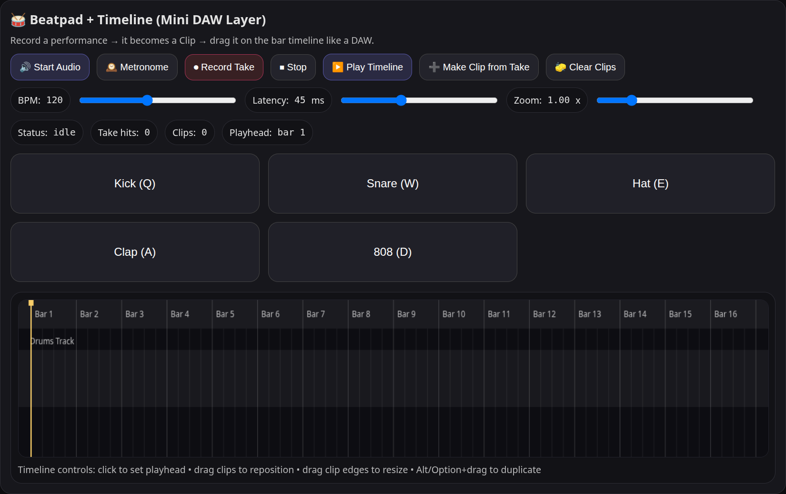

I design and build interactive front-end systems.
I specialize in building real-time interfaces and browser-based tools with clear state management and intentional UI design.

Launch Sequencer
Sequencer
Flagship ApplicationSequencer is a browser-based beat sequencing tool built with the Web Audio API. It focuses on precise audio timing, real-time input handling, and state-driven interface architecture.
Supporting Applications
About
I’m a front-end developer focused on building interactive systems that balance structure, usability, and performance. I enjoy working on tools that require careful state management and thoughtful UI design.